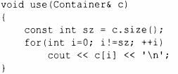
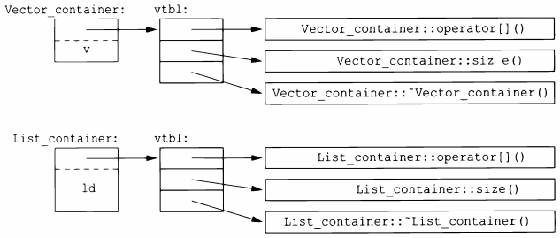

⇐4.3 Абстрактные типы 4.5 Иерархии классов⇒
Вернемся вновь к использованию Container:
Каким образом вызов с [i] в usе() обращается к правильному оператору operator[]()? Когда h() вызывает use(), должен вызываться operator[]() класса List_container. Когда же use() вызывается из g(), необходимо вызывать оператор operator[]() класса Vector_container. Чтобы суметь разрешить вызов operator[](), объект Container должен содержать информацию, позволяющую выбрать нужную функцию для вызова во время выполнения. Обычный способ реализации заключается преобразовании компилятором имени виртуальной функции в индекс в таблице указателей на функции. Такую таблицу обычно называют таблицей виртуальных функций или просто vtbl. Каждый класс с виртуальными функциями имеет собственную vtbl, определяющую его виртуальные функции. Графически это можно представить следующим образом.
Функции в vtbl позволяют правильно использовать объект, даже если его размер и схема размещения его данных неизвестны вызывающей функции. Реализация вызывающей функции должна знать только местоположение указателя на vtbl в Container и индекс, используемый для каждой виртуальной функции. Этот механизм виртуального вызова можно сделать почти таким же эффективным, как и механизм "нормального вызова функции" (в пределах 25%). Его накладные расходы в смысле памяти - один указатель в каждом объекте класса с виртуальными функциями плюс один vtbl для каждого такого класса.